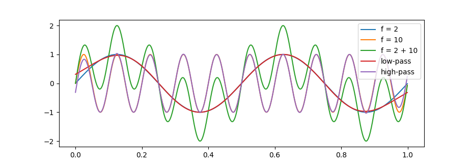
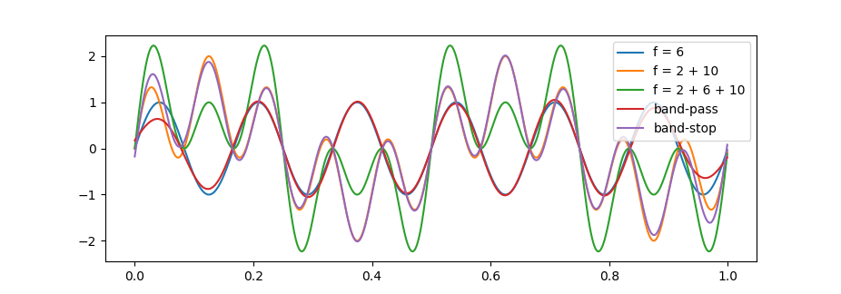

一个简单的低通滤波器
本文译自 How to Create a Simple Low-Pass Filter。
低通意即仅允许低频通过，阻滞高频。sinc 滤波器就是一个理想的低通滤波器。信号处理中常用的、正则化的 sinc 函数定义为：
$$\text{sinc} (x)=\frac{\sin(\pi x)}{\pi x}$$
由于 sinc 函数的傅里叶变换的结果即是关于 $y$ 轴对称的矩形函数（rectangular function），在 $x$ 轴正半部分即为一个理想的低通滤波时窗，当与输入信号褶积时，sinc 滤波器即可得到一个仅包含所有截止频率以下成分的输出信号。
sinc 滤波器
为设计一个数字滤波器，需要先将连续的 sinc 函数归一化，再逐点采样生成一个序列。定义 sinc 滤波器的脉冲响应：
$$h[n] = 2f_c \text{sinc} (2 f_c n)$$
这里的 $f_c$ 是经采样频率分数特征化后的截止频率。例如，采样频率为 1000 Hz ，取 $f_c = 0.01 = 10/1000$ 时即将去除信号中高于 10 Hz 的频率成分。
然而，由于 sinc 函数是无限长的，在设计滤波器时，需要将其在某处截断，这就会在滤波结果中引起持续的振荡。这时，最容易想到的解决方法就是，在 sinc 滤波器上叠加一个时窗，使滤波器在时窗边界处趋近于 $x$ 轴。
时窗
窗函数即一个在某一区间外值全为 0 的函数。作为其中比较常用的一种，Blackman 窗的定义为：
$$w[n] = 0.42 - 0.5 \cos\Big(\frac{2 \pi n}{N - 1}\Big) + 0.08 \cos\Big(\frac{4 \pi n}{N - 1}\Big)$$
其中 $n\in [0, N - 1]$。
时窗 sinc 滤波器
根据上面给出的定义，可以得到时窗 sinc 滤波器在区间 $[0, N - 1]$ 内的表达式为：
$$h[n] = \text{sinc} \Big(2 f_c \big(n - \frac{N - 1}{2}\big)\Big) \Big(0.42 - 0.5 \cos\big(\frac{2 \pi n}{N - 1}\big) + 0.08 \cos\big(\frac{4 \pi n}{N - 1}\big) \Big)$$
对于 $n \notin [0, N - 1]$，$h[n] = 0$。这里省略了 sinc 滤波器的系数 $2 f_c$，因为还需要进行正则化，以得到单位滤波增益：
$$h_{\text{normalized}} [n] = \frac{h[n]}{\sum_{i=0}^{N - 1} h[i]}$$
过渡带宽
采样频率分数特征化的过渡带宽 $b$ 和滤波器长度 $N$ 之间有一个近似关系：
$$b \approx \frac{4}{N}$$
根据此式，在设定过渡带宽后，即可求出合适的滤波器长度。此外，一般取 N 为奇数，以确保滤波器峰值的两侧有相同的采样点数。例如，采样频率为 1000 Hz，欲得到 1 Hz 的过渡带宽，即 $b = 1/1000 = 0.001$，取 $N = 4001$ 即可。
Python 代码
如下即是上述低通滤波器的示例生成代码：
1 | import numpy as np |
通过将滤波器 $h$ 与信号 $s$ 褶积，即可得到低通滤波的结果：s = np.convolve(s, h)。
在实际信息处理过程中，褶积会导致输出信号与输入信号长度不一致，此时只需将输出信号向后时延 $(N - 1)/2$ 个数据点后，再截取与输入信号等长的信号段即可。
另外，Blackman 窗也可通过语句 w = np.balckman(N) 直接生成。
一个简单的高通滤波器
本文译自 How to Create a Simple High-Pass Filter。
前面已经介绍了低通滤波器的构造，通过频谱反转（Spectral inversion）即可将一个低通滤波器转化为一个高通滤波器。
从低通到高通
低通滤波会去除信号中的高频成分，如果我们从信号中减去低通滤波信号，剩下的便只是信号中的高频成分。据此，我们可以构造一个简单的高通滤波器。
首先，对信号作低通滤波：
$$x_{\text{lpf}}[n] = x[n] * h_{\text{lpf}}[n]$$
其中，$x[n]$ 为原始信号，$h_{\text{lpf}}[n]$ 为低通滤波器，$x_{\text{lpf}}[n]$ 即低通滤波信号，$*$ 表示褶积。接着，从原始信号中减去低通滤波信号：
$$x_{\text{hpf}}[n] = x[n] - x_{\text{lpf}}[n]$$
得到的 $x_{\text{hpf}}[n]$ 即为高通滤波信号。
从上述各式中，我们可以得到：
$$x_{\text{hpf}}[n] = x[n] - x_{\text{lpf}}[n] = x[n] * \delta[n] - x[n] * h_{\text{lpf}}[n] = x[n] * (\delta[n] - h_{\text{lpf}}[n])$$
因此，高通滤波器可以定义为：
$$h_{\text{hpf}}[n] = \delta[n] - h_{\text{lpf}}[n]$$
频谱反转
上述即为频谱反转的理论原理，其具体做法为：
- 构造一个简单的低通滤波器 $h[n]$；
- 改变低通滤波器中所有元素的符号；
- 给滤波器中心的元素加上 1。
Python 代码
如下即是上述高通滤波器的示例生成代码：
1 | import numpy as np |
一个简单的带通滤波器
本文译自 How to Create Simple Band-Pass and Band-Reject Filters。
前面已经介绍了低通和高通滤波器的构造，通过简单组合即可利用一个低通滤波器和一个高通滤波器构造出一个带通滤波器。
带通滤波
带通滤波即保留下截止频率 $f_L$ 和上截止频率 $f_H$ 之间的频率成分，阻滞区间外的所有频率。为此，我们首先以 $f_H$ 为截止频率对原始信号进行低通滤波：
$$x_{\text{lpf,H}}[n] = x[n] * h_{\text{lpf,H}}[n]$$
其中，$x[n]$ 为原始信号， $h_{\text{lpf,H}}[n]$ 为以 $f_H$ 为截止频率的低通滤波器，$x_{\text{lpf,H}}[n]$ 为低通滤波信号，$*$ 表示褶积。再以 $f_L$ 为截止频率对低通滤波信号进行高通滤波：
$$x_{\text{bpf,LH}}[n] = x_{\text{lpf,H}}[n] * h_{\text{hpf,L}}[n]$$
其中，$h_{\text{hpf,L}}[n]$ 为以 $f_L$ 为截止频率的高通滤波器，$x_{\text{bpf,LH}}[n]$ 即为最终的带通滤波信号。
根据褶积的结合律，由：
$$x_{\text{bpf,LH}}[n] = (x[n] * h_{\text{lpf,H}}[n]) * h_{\text{hpf,L}}[n] = x[n] * (h_{\text{lpf,H}}[n] * h_{\text{hpf,L}}[n])$$
定义带通滤波器为：
$$h_{\text{bpf,LH}}[n] = h_{\text{lpf,H}}[n] * h_{\text{hpf,L}}[n]$$
Python 代码
如下即是上述带通滤波器的示例生成代码：
1 | import numpy as np |
一个简单的带阻滤波器
本文译自 How to Create Simple Band-Pass and Band-Reject Filters。
前面已经介绍了低通和高通滤波器的构造，通过简单组合即可利用一个低通滤波器和一个高通滤波器构造出一个带通滤波器。
带阻滤波
带阻滤波即保留下截止频率 $f_L$ 和上截止频率 $f_H$ 之外的频率成分，阻滞区间内的所有频率。为此，我们首先以 $f_L$ 为截止频率对原始信号进行低通滤波：
$$x_{\text{lpf,L}}[n] = x[n] * h_{\text{lpf,L}}[n]$$
其中，$x[n]$ 为原始信号，$h_{\text{lpf,L}}[n]$ 为以 $f_L$ 为截止频率的低通滤波器，$x_{\text{lpf,L}}[n]$ 为低通滤波信号，$*$ 表示褶积。再以 $f_H$ 为截止频率对原始信号进行高通滤波：
$$x_{\text{hpf,H}}[n] = x[n] * h_{\text{hpf,H}}[n]$$
其中，$h_{\text{hpf,H}}[n]$ 为以 $f_H$ 为截止频率的高通滤波器，$x_{\text{hpf,H}}[n]$ 为带通滤波信号。将低通滤波信号与高通滤波信号叠加：
$$x_{\text{brf,LH}}[n] = x_{\text{lpf,L}}[n] + x_{\text{hpf,H}}[n]$$
这里 $x_{\text{brf,LH}}[n]$ 即为最终的带阻滤波信号。
根据褶积的分配律，由：
$$x_{\text{brf,LH}}[n] = x[n] * h_{\text{lpf,L}}[n] + x[n] * h_{\text{hpf,H}}[n] = x[n] * (h_{\text{lpf,L}}[n] + h_{\text{hpf,H}}[n])$$
定义带阻滤波器：
$$h_{\text{brf,LH}}[n] = h_{\text{lpf,L}}[n] + h_{\text{hpf,H}}[n]$$
Python 代码
如下即是上述带阻滤波器的示例生成代码：
1 | import numpy as np |
一个简单的应用示例
1 | #!/usr/bin/env python3 |

